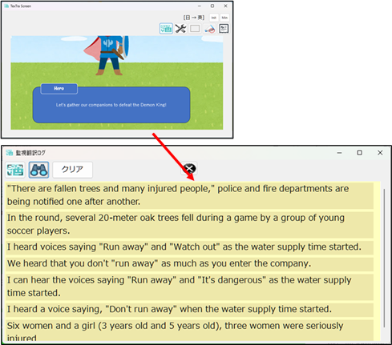
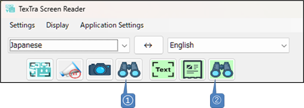
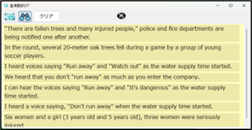
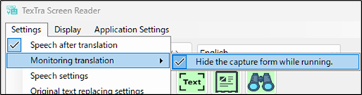

Monitoring translation
On a screen displaying content such as videos or
games,
it continuously translates the text that changes
within a user?selected area.

Main
screen

① Starts and stops monitoring translation.
(CTRL+SHIFT+F2)
Reads and translates text within the frame
area on the screen.
② Opens the monitoring translation log
screen.

Menu >
Settings > Speech after translation
On/Off
speech after translation.
Menu >
Settings > Monitoring translation
Configure the
settings for monitoring translation.
